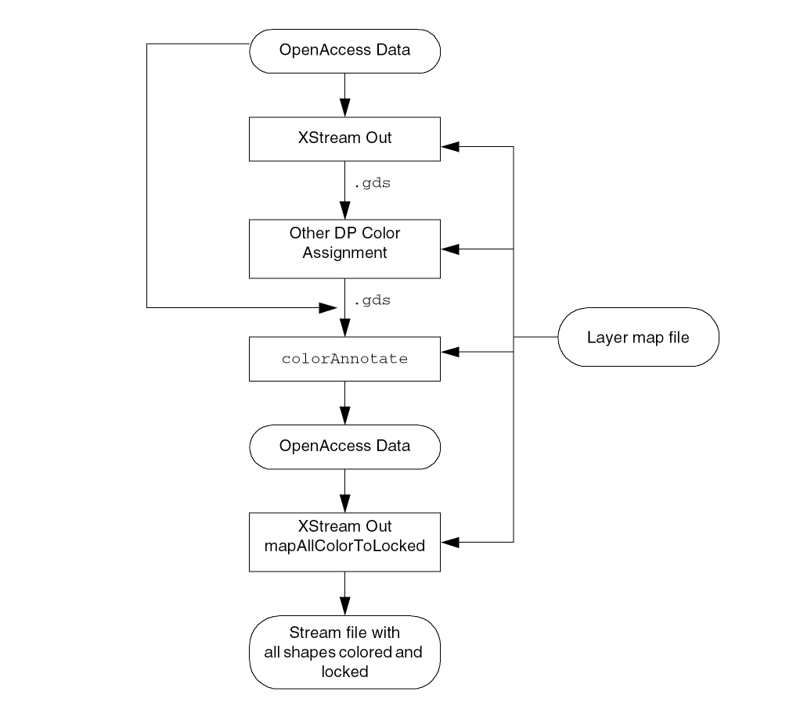

7
Fully Colored Backannotation Flow
In the Fully Colored Backannotation flow, the shapes and nets in a design that were manually color locked will retain their color and locked state. Shapes that are not color locked or are gray will be colored using a third-party engine for decomposition and a colorAnnotate utility to backannotate color.
The Fully Colored Backannotation flow is shown in the following figure.

The Fully Colored Backannotation flow steps are:
-
Creating the Layer Map File
To use the Fully Colored Backannotation flow, you must have a layer map file that maps the data to color annotations using theColor Annotatefield. The same layer map file can be used for all the steps in the flow. For more information, see Enhancements in the Layer Map File Format. -
Translating Data to a Stream File
Use XStream Out to translate the data to a Stream file (.gds) for input to the third-party color engine. For more information, refer to Design Data Translator’s Reference -
Assigning Colors to Unlocked and Uncolored Shapes Using a Third-Party Color Engine
Use the third-party tool to assign colors to all the shapes that are not color locked in the database, including gray (uncolored) shapes. During this process, previously colored shapes can change colors. The third-party tool outputs a Stream file that consists of color annotations only for the shapes that were colored by the third-party tool. -
Merging Locked Shapes with Shapes Colored by the Third-Party Color Engine
Use the newcolorAnnotateutility to merge the original data with the color annotations in the third-party tool Stream file output. For more information, see colorAnnotate Utility. The color-locked shapes in the original data are not changed. All other shapes are colored according to the color assignments from the third-party tool. At the end of this step, all shapes will be colored. -
Creating a Stream File with All Colors Locked
Use XStream Out with the new Map All Colors to Locked option to create a Stream file in which all shapes are colored and locked. For information about using the XStream Out GUI, see New Map All Colors to Locked Option in XStream Out.
Related Topics
Enhancements in the Layer Map File Format
Return to top